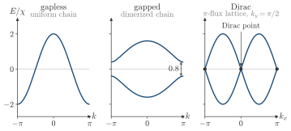
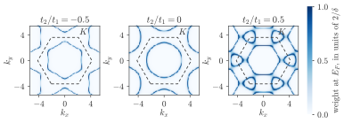

Page 7 of 11 of this session
8.9 The mean-field spinon Hamiltonian and its dispersion classes
What does the spin problem look like after the mean-field decoupling, and which spinon bands can it give? We will now see that it becomes a tight-binding model for the auxiliary fermions at half filling, (8.15). Its bands fall into three classes, with gapless, gapped or Dirac spinons.
\[\mathcal H = \sum_{\langle ij\rangle} J_{ij}\left(\frac14 - \frac12\,\chi_{ij}^\dagger\chi_{ij}\right) = \text{const} - \frac12\sum_{\langle ij\rangle} J_{ij}\, \chi_{ij}^\dagger \chi_{ij}. \tag{8.13}\]
\[\chi_{ij}^\dagger\chi_{ij} \;\approx\; \langle\chi_{ij}^\dagger\rangle\,\chi_{ij} + \chi_{ij}^\dagger\,\langle\chi_{ij}\rangle - |\langle\chi_{ij}\rangle|^2. \tag{8.14}\]
This is the Heisenberg model of Section 8.8, written with the bond operator \(\chi_{ij}=\sum_\sigma f^\dagger_{i\sigma}f_{j\sigma}\) of the auxiliary fermions, which makes it quartic in the fermions, and its mean-field decoupling. In the decoupling \(\langle\chi_{ij}\rangle\) is the expectation value of the bond operator in the mean-field ground state.
We put the couplings and the expectation value of (8.14) together into one mean-field parameter \(\chi_{ij}\) per bond, and if needed we impose the constraint (8.11) on average with a Lagrange multiplier. In this way, the mean-field decoupling of Section 8.8 turns the original spin problem into a Hamiltonian for the auxiliary fermions, which has the form of a tight-binding model and which we can diagonalize.
The mean-field Hamiltonian of the spinons is the tight-binding model
\[\mathcal H_\text{MF} = \sum_{ij,s} \chi_{ij}\, f^\dagger_{i,s} f_{j,s}. \tag{8.15}\]
The constraint (8.11) puts one fermion on every site, out of two spin states, so the spinons fill half of the states of these bands.
The steps From the decoupling (8.14) to the hopping model (8.15)
We put (8.14) into (8.13). Each bond \(\langle ij\rangle\) gives
\[-\frac{J_{ij}}2\,\chi^\dagger_{ij}\chi_{ij}\;\approx\;-\frac{J_{ij}}2\Big(\langle\chi_{ij}\rangle^*\chi_{ij}+\langle\chi_{ij}\rangle\,\chi^\dagger_{ij}\Big)+\frac{J_{ij}}2\,|\langle\chi_{ij}\rangle|^2 .\]
The bond operator \(\chi_{ij}=\sum_s f^\dagger_{is}f_{js}\) moves a fermion from \(j\) to \(i\), and \(\chi^\dagger_{ij}=\sum_s f^\dagger_{js}f_{is}\) moves it back. So the coefficient of \(f^\dagger_{is}f_{js}\) is
\[-\frac{J_{ij}}2\,\langle\chi_{ij}\rangle^* = -\frac{J_{ij}}2\sum_\sigma\langle f^\dagger_{j\sigma}f_{i\sigma}\rangle ,\]
and the coefficient of \(f^\dagger_{js}f_{is}\) is its complex conjugate, as it must be for a Hermitian Hamiltonian. This coefficient is the mean-field parameter of (8.15) on the bond, the hopping of the spinons, so it is proportional to the exchange \(J_{ij}\). The term \(\frac{J_{ij}}2|\langle\chi_{ij}\rangle|^2\) and the constant of (8.13) are numbers, which shift the energy and not the states.
The expectation value is taken in the ground state of (8.15), so the hoppings are found self-consistently. We guess them, diagonalize (8.15) at half filling, compute \(\langle\chi_{ij}\rangle\) and repeat, as in the self-consistent loop of Section 1.12.
The constraint (8.11) is imposed on average. We add \(-\sum_i\lambda_i\big(\sum_s f^\dagger_{is}f_{is}-1\big)\) with one Lagrange multiplier \(\lambda_i\) per site, and we choose the \(\lambda_i\) so that every site holds one fermion on average. When all the sites are equivalent the \(\lambda_i\) are equal, and \(\lambda\) is the chemical potential that gives one fermion per site, which is half filling. On the chain the band is symmetric around zero, so \(\lambda=0\). On the triangular lattice with the hopping \(1\) to the first neighbors the band runs from \(-3\) to \(6\), and half filling puts the Fermi level at \(-0.835\).
This mean-field step is different from all the other mean-field decouplings of this course up to now, since it does not need to break time-reversal symmetry. If we take the same \(\chi_{ij}\) for spin up and spin down, we keep \(\langle \mathbf S_i\rangle = 0\) exactly, as (8.5) and (8.9) require. When the flux of the \(\chi_{ij}\) around every plaquette, which we define in Section 8.10, is \(0\) or \(\pi\), as for real \(\chi_{ij}\), the ground state is also time-reversal symmetric by construction. On a lattice with triangles, a complex \(\chi_{ij}\) with another flux keeps \(\langle\mathbf S_i\rangle=0\) and can break time reversal.
Equation (8.15) is a tight-binding model for the auxiliary fermions, with hoppings \(\chi_{ij}\) that are fixed self-consistently by the geometry of the lattice and by the exchange couplings \(J_{ij}\). Its excitations are the spinons, which are emergent fermionic quasiparticles with spin \(1/2\) and no charge. We obtain them with the same procedure that we used for electrons in the whole course. We take a quartic interaction, decouple it at the mean-field level and diagonalize a bilinear Hamiltonian, and the only difference is that now we apply it to the spin sector. Figure 8.4b shows the resulting picture, with spinons that hop on the lattice with amplitude \(\chi_{ij}\), at half filling because of (8.11).

When we diagonalize (8.15) on a given lattice, we obtain a spinon band structure. Depending on the mean-field parameters that we obtain, there are three different possible outcomes.
Gapless spinons, with a Fermi surface, so that there are excitations at energies as close to zero as we want and a finite density of states at the Fermi level.
Gapped spinons, where it costs a finite energy to create a spinon.
Dirac spinons, where two bands touch at isolated points in the Brillouin zone, with a linear relation between energy and momentum, as for the Dirac cone of graphene in Section 2.11. In two dimensions the density of states then vanishes at the Fermi level.
Schematic 8.7 shows one example of each class. The gapped example uses the alternating bonds of the valence bond solid of Section 8.5.

g3_spinon_band_classes.py
In two dimensions the gapless spinons of the first class have a whole line of states at the Fermi level, which is a spinon Fermi surface. On the triangular lattice of the notebook, Schematic 8.8 shows it for three ratios of the second-neighbor hopping \(t_2\) to the first-neighbor hopping \(t_1\).

g3_spinon_fermi_surface.py
Notebook check-in: session8.ipynb, “Spinon Fermi surface in gapless quantum spin liquids” (Core)
Build the spinon tight-binding Hamiltonian (8.15) on the triangular lattice and look at how its Fermi surface changes when the ratio of hopping amplitudes \(t_2/t_1\) changes. In the quiz you repeat this on the square and kagome lattices, and you explain why the effective spinon model must be at half filling. The reason is the single-occupancy constraint (8.11) at the mean-field level.
Inelastic neutron scattering measures the spin excitations of a magnet against their energy, so it shows whether they have a gap. In the kagome antiferromagnet ZnCu\(_3\)(OH)\(_6\)Cl\(_2\) it reveals a spectrum of low energy spin excitations with no observable gap down to \(0.1\) meV. From this and from their thermodynamic measurements, the authors suggest a spin-liquid state with essentially gapless excitations. That these excitations are spinons with no gap, as in the gapless or the Dirac class of (8.15), is our reading and not a statement of the article. The measurement is in this article.
The spinons hop with the mean-field Hamiltonian
\[\mathcal H_\text{MF} = \sum_{ij,s} \chi_{ij}\, f^\dagger_{i,s} f_{j,s},\]
where \(s\) is the spin. Why do we fill half of its states?
Show the answers
- A. ✓ True
This is true. Each site holds one \(f\) fermion on average, which is one particle for two spin states. This gives half filling of the spinon bands.
- B. ✗ False
This is false. Add a second-neighbor hopping to the square lattice. Particle-hole symmetry is lost, but the constraint still asks for one fermion per site, so half filling is still required.
- C. ✗ False
This is false. A tight-binding band with filling \(0.3\) has a Fermi surface too. The half filling comes from the constraint and not from the existence of a Fermi surface.
We take the same \(\chi_{ij}\) for spin up and spin down. What does this choice keep exact?
Show the answers
- A. ✗ False
This is false. The same \(\chi_{ij}\) for both spins can give a Fermi surface or Dirac points. A uniform \(\chi\) on the square lattice has a Fermi surface and the \(\pi\)-flux choice has Dirac points.
- B. ✓ True
This is true. The two spin species see the same band, so no spin direction is selected. The state has zero magnetization by construction. A complex \(\chi_{ij}\) with another flux through a triangle of the lattice also has zero magnetization, and it can break time reversal.
- C. ✗ False
This is false. Spinons are neutral for any \(\chi_{ij}\), also a spin-dependent one, since the constraint (8.11) fixes one fermion per site. The equal choice for both spins is not what gives this.
\[\sum_\sigma f_{i\sigma}^\dagger f_{i\sigma} = 1 \qquad \text{at every site } i. \tag{8.11}\]
Each picture shows spinon bands \(E/\chi\) along a line in momentum. The spinons are at half filling. These bands are symmetric around zero, so the Fermi level is at \(E=0\). Dirac spinons have two bands that touch at the Fermi level, linearly in \(k\). Which picture has Dirac spinons?
Show the answers
- A. ✗ False
This is false. One band crosses the Fermi level, at \(k=\pm\pi/2\). These two points are the Fermi surface of a chain, and the density of states at the Fermi level is finite, so these are gapless spinons. This is the uniform chain with \(\chi=1\).
- B. ✓ True
This is true. The two bands \(\pm2|\sin k|\) touch at the Fermi level at \(k=0\) and \(k=\pm\pi\), with the slopes \(\pm2\). This is the \(\pi\)-flux square lattice along the line \(k_y=\pi/2\), which goes through its two Dirac points. Around each of them the bands form a cone, and the density of states vanishes at the Fermi level.
- C. ✗ False
This is false. The two bands are separated by a gap of \(0.8\) at \(k=\pm\pi\), so these are gapped spinons, and no state is at the Fermi level. This is the chain with the hoppings \(0.6\) and \(1\) on alternate bonds.
Take the uniform chain with the exchange \(J\) on every bond, and a real and negative hopping \(\chi\) in (8.15), so that the spinon band \(2\chi\cos k\) has its minimum at \(k=0\). At half filling, find \(\langle f^\dagger_{is}f_{i+1,s}\rangle\) for one spin. Then find the self-consistent \(\chi\), which is the coefficient \(-\frac J2\langle\chi_{i,i+1}\rangle^*\) of the decoupling, and the width of the spinon band.
Solution
At half filling each spin fills the states with \(|k|<\pi/2\), which is half of the zone. With \(f_j=N^{-1/2}\sum_k e^{ikj}f_k\) we get
\[\langle f^\dagger_{is}f_{i+1,s}\rangle=\int_{-\pi/2}^{\pi/2}\frac{dk}{2\pi}\,e^{ik}=\frac{1}{\pi}.\]
The bond operator sums over the two spins, so \(\langle\chi_{i,i+1}\rangle=2/\pi\approx0.64\), and the hopping is
\[\chi=-\frac J2\cdot\frac2\pi=-\frac J\pi\approx-0.32\,J,\]
which is negative, as we assumed. The band \(2\chi\cos k\) then runs from \(-2J/\pi\) to \(2J/\pi\), a width of \(4J/\pi\approx1.27\,J\). A positive \(\chi\) gives \(|\chi|=J/\pi\) too, since \(f_j\to(-1)^jf_j\) changes the sign of every hopping of the chain.
This is a mean-field number, and the uniform chain is one self-consistent solution of the loop, which we take as an ansatz. A loop on a cell of two sites is free to dimerize, and it ends at the hoppings \(-J/2\) and \(0\) on alternate bonds. Its mean-field energy \(\frac J4-\frac J2|\langle\chi_{ij}\rangle|^2\) is \(0\) per bond, against \(0.047\,J\) for the uniform chain. So the uniform chain of Schematic 8.7 is an ansatz, and not the lowest mean-field state of the chain.
Try it. Change the values in t2s and look at how the spinon Fermi surface of the triangular lattice changes. Then replace triangular_lattice by square_lattice and see which shape the Fermi surface has at \(t_2=0\) and half filling.
- In Section 8.10 the bond variable \(\chi_{ij}\) of (8.15) turns out to be a gauge field on the links, with visons as its excitations.
- In Section 8.13 the spinon band of the Kondo sites is flat, and a direct exchange between them gives it a dispersion.
- In Section 9.9 the gapless spinon chain screens a magnetic impurity with a power law, and a gapped chain with an exponential.